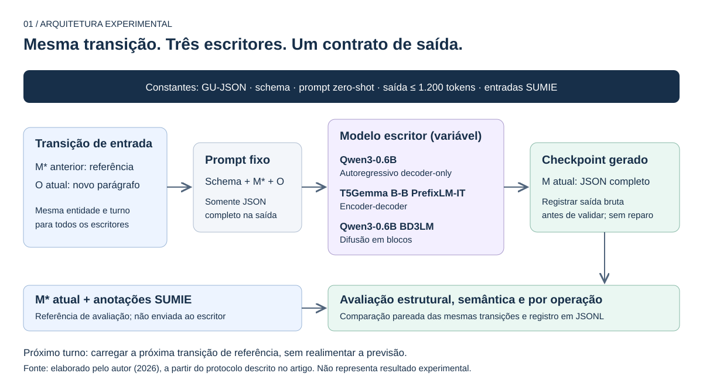
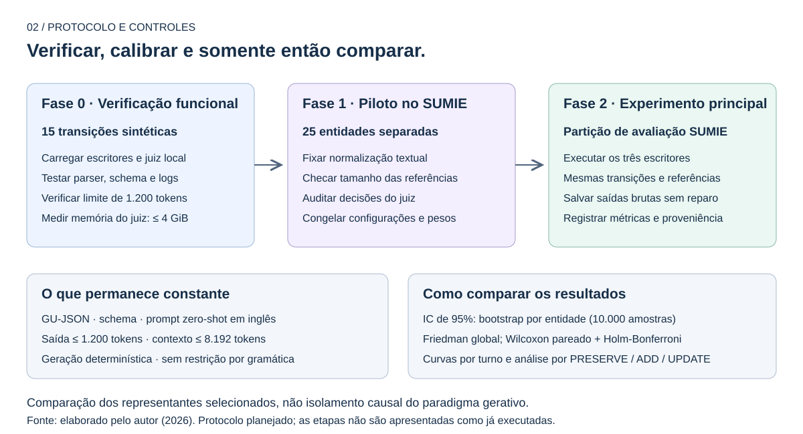
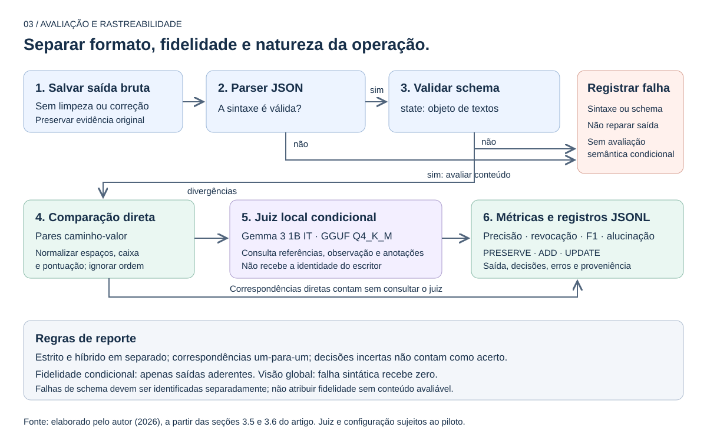
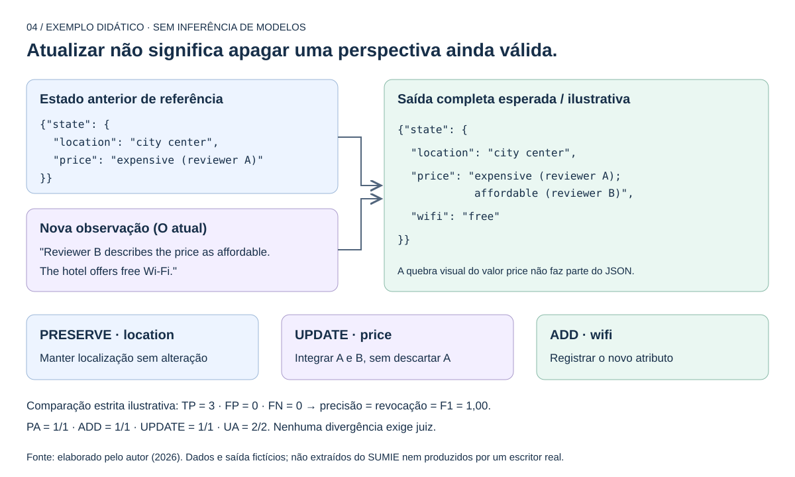

Arquitetura experimental e exemplo de transição
O experimento será organizado em um harness que mantém constantes o método GU-JSON, o schema, o prompt zero-shot e o orçamento de saída de 1.200 tokens, variando o modelo escritor. Em cada transição, o escritor receberá o estado anterior de referência e a nova observação, devendo regenerar o checkpoint JSON completo. O estado esperado será utilizado exclusivamente na avaliação, e a previsão produzida não será reutilizada como entrada do turno seguinte (Figura 1).
A execução seguirá três fases: verificação funcional com transições sintéticas, estudo piloto para fixação dos critérios de avaliação e experimento principal nas mesmas transições do SUMIE para os três escritores (Figura 2). A saída textual bruta será persistida antes da validação sintática e estrutural, sem reparo automático. As correspondências de conteúdo serão verificadas inicialmente por normalização textual, com encaminhamento das divergências ao juiz local, sem identificação do escritor (Figura 3).
No exemplo sintético da Figura 4, a localização permanece válida e deve ser preservada; a informação sobre Wi-Fi deve ser adicionada; e uma nova avaliação de preço deve ser integrada à perspectiva anterior. A atualização não deve substituir arbitrariamente uma opinião ainda válida, em conformidade com a política de acumulação adotada para o SUMIE.
Este material ilustra o protocolo planejado. O exemplo é fictício, não pertence ao SUMIE e não é uma saída real dos modelos. A numeração das figuras é local e deve ser ajustada ao inseri-las no artigo. O artigo original não foi alterado.
Arquitetura experimental
O controle está na entrada: cada escritor recebe a mesma transição de referência. O alvo esperado não é exposto ao escritor.


Protocolo e controles experimentais
As configurações são fixadas no piloto, antes da comparação principal. O bootstrap preserva os turnos de cada entidade.


Pipeline de avaliação
Formato válido não garante conteúdo fiel. As falhas estruturais, a correspondência estrita e as decisões semânticas devem permanecer distinguíveis.


Uma transição, três operações
O checkpoint é reescrito integralmente, mesmo quando parte dos atributos apenas precisa ser preservada.


Teste uma saída de checkpoint
Edite a saída ou carregue um cenário. A execução verifica sintaxe, contrato estrutural e correspondência estrita com a referência sintética.
Não há chamada a modelos, tokenizador ou juiz. A normalização didática remove pontuação, uniformiza caixa e espaços; não implementa equivalência semântica. FP significa par não correspondente, não alucinação confirmada. O harness científico e seus critérios não são substituídos por esta demonstração.
1. Estado anterior de referência
2. Nova observação
Reviewer B describes the price as affordable. The hotel offers free Wi-Fi.
3. Estado esperado
PRESERVE: location · UPDATE: price · ADD: wifi.
As opiniões A e B continuam representadas.
5. Resultado da execução
Como validar e reutilizar este material
- A saída correta deve resultar em TP=3, FP=0, FN=0 e F1=1,00.
- A omissão de location deve resultar em TP=2, FP=0, FN=1 e F1=0,80; PRESERVE falha.
- A substituição de price deve resultar em TP=2, FP=1, FN=1 e F1≈0,67; UPDATE falha.
- O atributo adicional deve resultar em TP=3, FP=1, FN=0 e F1≈0,86.
- Erros de sintaxe ou schema devem interromper a comparação semântica, sem reparar a saída.
- Inverta a ordem das chaves ou altere caixa e espaços: a comparação normalizada deve manter os acertos.
- Baixe o registro para inspecionar a entrada, a saída bruta e os resultados didáticos.
- Para o artigo, utilize os SVGs como figuras vetoriais. Para PDF, use os botões de impressão; cada figura fica em página separada.
Base documental: artigo, seções 3.1–3.7. Os limites de tokens, uso do juiz e testes estatísticos são descritos, não executados neste HTML.